Die einzelnen Abschnitte des Danewerks in Bildern
(Die Bilder können jeweils durch Anklicken vergrößert dargestellt werden!)
Haithabu-Ringwall (die Bilder folgen dem Wallverlauf vom nördlichen zum südlichen Wallende am Haddebyer Noor)


Verbindungswall (Margarethenwall) (die Bilder folgen dem Wallverlauf ab Haithabu bis zum Wallende)
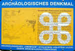 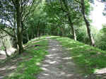 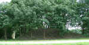 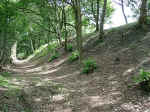 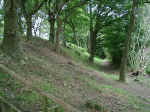 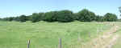 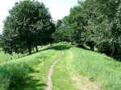 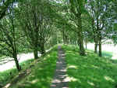 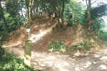 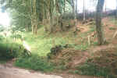 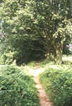


Thyraburg (die Bilder folgen dem Wallverlauf ab Rotenkrug bis zur Thyraburg)
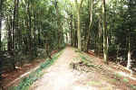 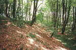 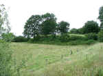 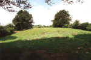 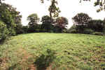 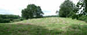


Waldemarsmauer (einziger sichtbarer Abschnitt hinter dem Museum Danevirkegården)
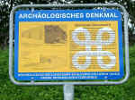 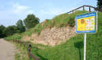 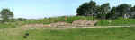 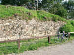 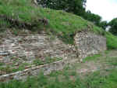 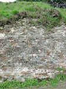 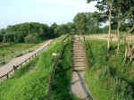


Hauptwall (die Bilder folgen dem Wallverlauf ab dem Museum Danevirkegården bis nach Kurburg)
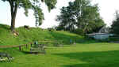 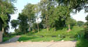 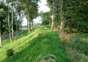 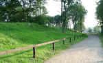


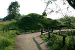 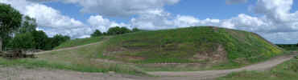 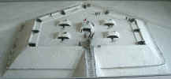


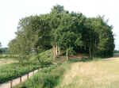 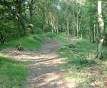 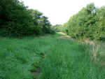 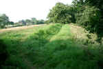 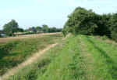


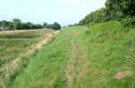 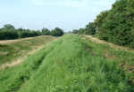 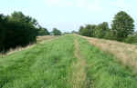 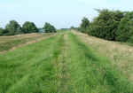


Hauptwall (die Bilder folgen dem Wallverlauf ab Kurburg bis zum Übergang in den Krummwall)
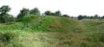 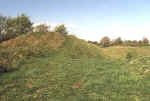 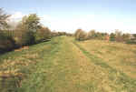 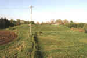 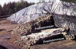 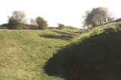 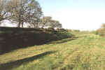 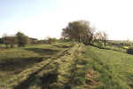 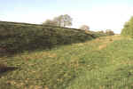 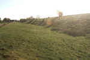


Krummwall (die Bilder folgen dem Wallverlauf ab dem Hauptwall bis zum Ende des Krummwalls)


Nordwall


Ochsenweg (Heerweg)


Kograben